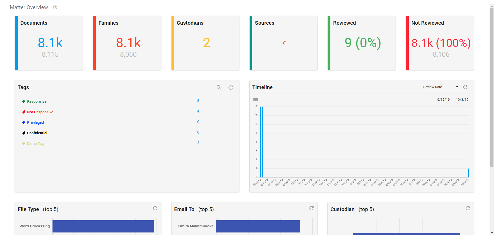
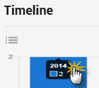

For a description of the various components displayed on the Matter Overview page, review the documentation below.

Documents Tile
Click to view all matter documents in the Document List - displayed with the Flat List view. This simply displays the individual documents, without reference to family documents.
Families Tile
Click to view all matter documents in the Document List - displayed with the Full Family Tree view. This displays documents with their family groupings. Child documents, such as email attachments, are shown beneath their parent documents.
Custodians and Sources Tile
View the number of related custodians and sources.
Reviewed and Not Reviewed Tile
Click to view documents with either the review status Reviewed or Not Reviewed.
Tags
View five of the available tags.
The tags are sorted according to the order used in Document View. Click Show More to view all available tags.
The number of labeled documents is displayed behind each tag.
Click on a tag to open the documents labeled with this tag in the Document List.
Refresh the list for the latest information.
Search the list of tags:
Timeline
View the files in the matter according to Review Date, Created, Modified, Accessed, Email Sent Time, Email Creation Time, Email Delivery Time, Appointment Start, Appointment End.
Open the files displayed in the Timeline in the Document List:
Or drill down, by clicking on a bar. For example, click on the bar with files created in 2014 (year):

Select the arrow to go back one step. Click a bar to drill down even more (month).
Or, click the Document List icon to view all documents displayed in the timeline.
You can drill down the bars until you have reached the bottom one (days). Then the Document List will be opened.
Tip: For a time range search, it is advised to use Date Search
Facet Values
The first 3 facets from Facet View are displayed here, with the top 5 values per facet.
Click on a bar to open these documents in the Document List.